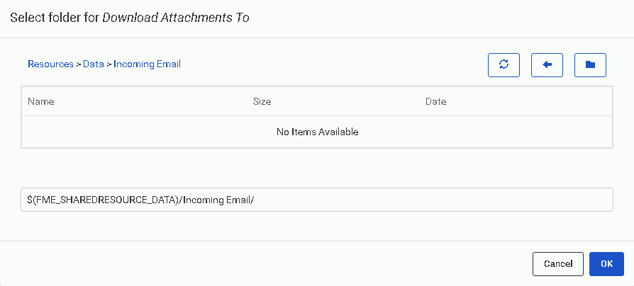

After completing this unit, you'll be able to:
Starting workspace (C:\FMEData2021\Workspaces\AutomateWorkflows\exercise-run-a-workspace-in-response-to-incoming-email.fmw)
buildingupdate.zip (.shps with companion files, C:\FMEData2021\Resources\BuildVersatileAutomations\Data\buildingupdate.zip)
Complete FME Server project (Requires FME Server instance with public DNS record configured in Trigger to run as-is, C:\FMEData2021\Workspaces\AutomateWorkflows\exercise-run-a-workspace-in-response-to-incoming-email.fsproject)
Go to the FME Server web interface. On the left navigation pane, click Automations, then Manage. Click the New button above your list of Automations.
Choose one of the following two protocols to monitor email:
A. FME Server email via SMTP protocol
This method will cause emails sent directly to FME Server to initiate a workflow. See the FME Server Documentation for details.
On the Automations canvas, double-click the Trigger node. Select Email Received (SMTP) from the Select a Trigger Event drop-down menu. Input an Email User Name to assign an email address on the FME Server host system that will receive notification emails. There is no need to specify the domain; if you want an email sent to RunMyWorkspace42@fmeserverhost to trigger the Automation, enter only “RunMyWorkspace42”.
Since you can create a unique email username for each Automation triggered by SMTP, no parameters to further filter messages are available in this Trigger. You may still set up Filter Actions downstream if you wish to do additional routing. Create a Resource directory to which to download email attachments (e.g. Data/Incoming Email/).
 Click Validate and (if valid) Apply.
B. External email account via IMAP protocol
This method will poll an external email account for new mail. See the FME Server Documentation for details.
On the Automations canvas, double-click the Trigger node. Select Email Received (IMAP) from the Select a Trigger Event drop-down menu. You will need to enter details of the IMAP Server to which you wish to connect; the Load Template button allows you to populate the required fields with information from several popular providers.
Input an IMAP Email Account to poll for new mail and enter its associated IMAP Email Password. You may want to change the polling interval, as external email providers may refuse the connection if FME Server polls too frequently.
Accept the default to fetch new emails only, and filter the subject line of incoming emails for the word Shapefile. If you use your external email account for purposes other than this Automation, it is critical to include an identifier in the subject line of any email meant to trigger this Automation; otherwise, you will be overrun with failed jobs!
Since this Automation will pass a Shapefile that is attached to an email to a workspace on FME Server, we need a home for those attachments. Click the ellipsis button to the right of the Download Attachments To field and specify a Resource folder to house any incoming email attachments (e.g. Data/Automations exercise data/incoming email/). FME Server will store all attachments from an email in a single directory, though in version 2019.0, only the first attachment will be included in the default output keys for use later in the Automation.
Click Validate and (if valid) Apply.
Download and publish the starting workspace to FME Server.
The sample workspace reads in a zipped Shapefile and outputs GeoJSON of the input features, with output filename based on input. It is important to archive (zip) your Shapefile (any single-file archive supported by FME will do) because the attachment file path passed from the Trigger to Actions downstream will only point at the first attached file.
If multiple files must be accessed from the same incoming email, you can create an Automation to download all files to a directory, and then another Automation to watch for and route the files created there.
Back in the Automation, double-click the silhouetted Next Action node, and from the Action list, select Run workspace. If Hide Guides was previously selected from the Automations menu, you’ll need to click on the node tray in the lower left of the canvas and drag out an orange Action node.
Select the repository and filename of the workspace you uploaded in the previous step. If you are using the example workspace, click the Upstream Messages arrow button under Source Esri Shapefile(s) and click Email > Email Attachment. The sample workspace provided is configured so that you only need to specify a resource folder in the Destination GeoJSON File field.
Click Apply.
To preserve your progress, click Menu above the Automations canvas, then Save As. Choose a name and add some descriptive tags, then click OK. Finally, click Start Automation in the upper right.
Send an email with this zipped Shapefile to the email account monitored by your Trigger.
If using SMTP, you will need to create the email based on your machine's public IP address or DNS. The address will look something like RunMyWorkspace42@34.244.122.210.
If using IMAP, enter your email address as normal and ensure that the email subject contains the word “Shapefile” so it will pass the filter.
Wait at least one polling interval, then check the Automation log. One way to do this is through Menu > View Log File when your Automation is displayed on the screen. You can also navigate to Automations > Manage, check the Automation’s box, and select Actions > View Log File. It can be helpful to click the clock icon above the log to show timestamps for each log entry.
If you check the Automation log file, you should see a tag <PUBLISHED_PARAMETER name="SourceDataset_ESRISHAPE"> that contains the file path of the Shapefile fed into your workspace. Paste the text above into the log search bar if you’re having trouble locating the entry. You can confirm the attached file was downloaded successfully by navigating to the Resource folder you specified in the Trigger and looking for a new subfolder named as in the log entry.
Well done. You created an automation that is triggered by incoming email and runs a workspace. Now you’re ready to add any number of your own workspaces or other tasks to an email-based workflow!